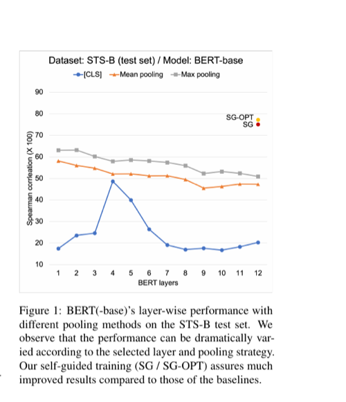

Self-Guided Contrastive Learning for BERT Sentence Representations
ACL-IJCNLP 2021
Taeuk Kim, Kang Min Yoo, Sang-goo Lee
One-Line Summary
A self-supervised contrastive learning method that leverages BERT's own intermediate-layer representations as guidance signals to produce high-quality sentence embeddings -- without any external data, augmentation, or labeled pairs -- achieving strong results on STS benchmarks (e.g., 74.62 avg. on all STS tasks with BERT-base) and diverse transfer tasks including multilingual STS.

Figure 1. BERT(-base)'s layer-wise performance with different pooling methods on the STS-B test set. The performance can vary dramatically depending on the selected layer and pooling strategy. The self-guided training methods (SG / SG-OPT) achieve much improved results compared to all baselines.
Background & Motivation
Pre-trained language models like BERT produce powerful contextual word representations, but deriving high-quality sentence-level representations from them remains a surprisingly difficult problem. Naive approaches such as averaging token embeddings or using the [CLS] token often yield sentence embeddings that underperform even non-contextual baselines like GloVe on semantic similarity tasks. This phenomenon, sometimes called the anisotropy problem, occurs because BERT's token representations tend to occupy a narrow cone in the embedding space, making cosine similarity an unreliable measure of semantic similarity.
How bad is the problem? In a preliminary experiment, the authors constructed sentence embeddings using various combinations of BERT layers and pooling methods, and tested them on STS-B. BERT-base's Spearman correlation (x100) ranged from as low as 16.71 ([CLS] at layer 10) to 63.19 (max pooling at layer 2). This dramatic variance -- nearly 47 points depending on the layer/pooling choice -- revealed that the standard practice of using the final-layer [CLS] token is far from optimal, and that there is substantial room for improvement.
Limitation of Prior Work: Existing contrastive learning methods for sentence embeddings (e.g., CERT by Fang and Xie (2020) using back-translation, or NLI-supervised methods like SBERT) rely on external datasets or augmentation pipelines to construct positive and negative pairs. Back-translation requires a translation model and introduces noise; NLI supervision limits applicability to domains where such data exists. These dependencies restrict their use in specialized text domains and introduce potential domain mismatch.
Key Insight: Different layers of BERT capture different levels of linguistic abstraction -- lower layers encode surface-level and syntactic features while higher layers encode more semantic information (Jawahar et al., 2019). This natural hierarchy provides a built-in source of diverse "views" of the same sentence, which can serve as a self-supervision signal for contrastive learning without any external data or augmentation. The intermediate representations are conceptually guaranteed to represent the corresponding sentence, making them ideal pivots for contrastive training.
Building on this insight, the authors propose Self-Guided Contrastive Learning, which fine-tunes BERT by contrasting its final-layer [CLS] representation against its own intermediate-layer representations. The method comes in two variants: SG (using the base NT-Xent loss) and SG-OPT (using a redesigned, optimized contrastive objective). The approach requires no external data, no augmentation, and no post-processing at inference time.
Proposed Method
The method fine-tunes BERT through a contrastive learning framework requiring only unlabeled sentences. The core idea is to clone BERT into two copies -- BERTF (fixed, providing training signals from intermediate layers) and BERTT (tuned, whose final-layer [CLS] is optimized as the sentence embedding) -- and train via a customized contrastive objective.
1
Dual-BERT Architecture with Self-Guided Pairs
BERT is cloned into BERTF (fixed) and BERTT (tuned) at the start of training. For each input sentence si, BERTF produces token-level hidden representations Hi,k at every layer k (0 to l). A pooling function p (max pooling by default) converts each layer's token representations into a sentence-level view hi,k = p(Hi,k). A sampling function sigma selects one or more of these views as the positive target hi. Meanwhile, BERTT produces the sentence embedding ci = BERTT(si)[CLS] from its final layer. The key design choice of keeping BERTF fixed prevents the training signal from degenerating as training proceeds -- if both copies were updated simultaneously, the intermediate-layer representations would drift and lose their value as diverse views.
2
Base Contrastive Loss (Lbase)
Given a mini-batch of b sentences, the set X = {ci} U {hi} is formed. The NT-Xent loss is computed over all elements: Lbasem = -log(phi(xm, mu(xm)) / Z), where phi(u,v) = exp(g(f(u), f(v)) / tau), g is cosine similarity, f is a two-layer MLP projection head (hidden size 4096, GELU activation), tau is a temperature hyperparameter, and mu(.) is a matching function that maps each ci to its corresponding hi and vice versa. A regularizer Lreg = ||BERTF - BERTT||22 prevents BERTT from diverging too far from BERTF. Layer 0 of BERTT is also frozen for stable learning.
3
Optimized Loss (Lopt) with Three Refinements
The authors analyze the four interaction factors in NT-Xent -- (1) ci toward hi, (2) ci away from cj, (3) ci away from hj, (4) hi away from hj -- and discover that only (1) and (3) are essential. Three modifications are applied: (a) The loss is re-centered on ci, treating hi only as targets to approach (not as anchors themselves), removing factor (4). (b) The repulsion between sentence embeddings (factor 2) is also removed as it proves insignificant. (c) Multiple intermediate-layer views {hi,k} for all layers k=0..l are used simultaneously instead of sampling a single one, yielding richer training signals. The final optimized loss Lopt sums over all b sentences and all l+1 layers, normalized by b(l+1).
Training Details: The method uses plain sentences from STS-B (training, validation, and test sets, without gold annotations) to fine-tune BERT -- identical to the setup used by BERT-flow. Hyperparameters are tuned on the STS-B validation set: temperature tau=0.01, regularization weight lambda=0.1. The projection head f is a two-layered MLP with hidden size 4096 and GELU activations. All trainable model performance is reported as the average of 8 separate runs to reduce randomness. The implementation is based on HuggingFace Transformers and SBERT, and is publicly available at github.com/galsang/SG-BERT.
No data augmentation: Unlike methods that require dropout masks, back-translation, or other augmentation strategies, SG-CL derives contrastive views entirely from the model's internal layer hierarchy
Efficient inference: At test time, only a single forward pass through BERTT is needed -- BERTF, the projection head, and all intermediate layers are discarded after training. The [CLS] token serves directly as the sentence vector at the same cost as standard BERT inference
Domain-agnostic: Since the method requires only unlabeled text, it can be applied to any domain without NLI, paraphrase, or other specialized supervision data
Principled objective design: The systematic analysis of NT-Xent's four interaction factors provides a theoretically grounded rationale for each design choice, rather than relying on ad-hoc modifications
Experimental Results
SG-CL is evaluated comprehensively on Semantic Textual Similarity (STS) tasks, SentEval transfer tasks, multilingual STS, and analyzed for computational efficiency and domain robustness. The method is tested across four base models: BERT-base, BERT-large, SBERT-base, and SBERT-large.
The ablation study systematically validates each design decision by evaluating variants on all STS test sets:
Variant
STS Avg.
Delta
SG-OPT (Lopt3)
74.62
--
+ Lopt2 (single view)
73.14
-1.48
+ Lopt1 (with cj repulsion)
72.61
-2.01
+ SG (Lbase, no optimization)
72.17
-2.45
tau = 0.1 (vs. 0.01)
70.39
-4.23
lambda = 0.0 (no regularizer)
73.76
-0.86
lambda = 1.0 (strong regularizer)
73.18
-1.44
Without projection head (f)
72.78
-1.84
Computational Efficiency
Method
Training Time
Inference Time (sec)
BERT + Mean pooling
--
13.94
BERT + WK pooling
--
197.03 (~3.3 min)
BERT + Flow
155.37s (~2.6 min)
28.49
BERT + SG-OPT
455.02s (~7.5 min)
10.51
Although SG-OPT requires moderate training time (~7.5 minutes), it achieves the fastest inference of all methods (10.51s on STS-B) since no post-processing is needed once training is completed. WK pooling is the slowest at inference (197s), and Flow also incurs overhead (28.5s) due to its flow-based transformation.
Key Experimental Findings
Dramatic improvement over vanilla BERT: SG-OPT improves the average STS score from 31.40 (BERT [CLS]) to 74.62 -- a gain of over 43 absolute points -- demonstrating that the poor quality of default BERT sentence embeddings is a solvable problem through self-guided contrastive learning
Outperforms post-hoc methods: Compared to BERT-flow (68.77 avg.) and WK pooling (25.58 avg.), SG-OPT achieves substantially higher scores. Notably, contrastive learning with self-guidance (SG-OPT: 74.62) vastly outperforms contrastive learning with back-translation (BT: 62.63), proving the superiority of internal guidance over external augmentation
Consistent across model sizes: Improvements hold for BERT-base, BERT-large, SBERT-base, and SBERT-large, demonstrating the method's generalizability across model architectures and sizes
Multilingual capability: Using MBERT with zero-shot cross-lingual transfer, SG-OPT achieves 82.09 on SemEval-2014 Task 10 (Spanish) and competitive results on SemEval-2017 Task 1 (Arabic, Spanish, English), showing the method extends naturally to multilingual settings
Strong transfer performance: On SentEval transfer tasks, SG-OPT (86.60 avg.) outperforms both mean pooling (85.85) and WK pooling (85.83), showing that contrastive fine-tuning improves general-purpose utility rather than sacrificing it
Domain robustness: When trained on NLI data instead of STS-B data, SG-OPT loses only 1.83 points on STS-B and 1.63 on average across all STS tasks -- far less than Flow which suffers losses of 12.16 and 4.19 respectively -- demonstrating strong robustness to domain shifts
Ablation insights: Each of the three optimizations to NT-Xent contributes to performance; the projection head is critical (-1.84 without it); temperature tau=0.01 is far better than tau=0.1 (-4.23); and the back-translation + self-guidance ensemble (75.10 avg.) further improves over either technique alone
Why It Matters
This work made several important contributions to the field of sentence representation learning:
Pioneered self-supervised contrastive learning for sentence embeddings: SG-CL was among the first methods to show that high-quality sentence embeddings can be derived from BERT without any labeled data or data augmentation, relying solely on the model's own internal layer hierarchy as a learning signal. The idea of "recycling" intermediate hidden representations as positive samples was a novel and elegant solution.
Principled analysis of contrastive objectives: Rather than using NT-Xent as a black box, the paper systematically decomposed the loss into four interaction factors, empirically tested which are essential (attraction to own intermediate views, repulsion from others' views) and which are dispensable (inter-embedding repulsion, inter-view repulsion). This analysis provides a reusable framework for customizing contrastive losses in other settings.
Established that BERT's layer hierarchy is a useful inductive bias: The insight that intermediate and final layers provide naturally complementary views of the same input has influenced subsequent work on layer-wise representation learning and multi-view contrastive objectives. The preliminary experiment showing 47-point variance across layer/pooling combinations was itself an illuminating finding.
Practical and efficient: SG-OPT achieves the fastest inference time (10.51s vs. 28.49s for Flow, 197s for WK pooling) because no post-processing is needed. Training requires less than 8 minutes. The code is publicly available, making it immediately applicable to domain-specific settings.
Multilingual generalization: The successful application to MBERT for cross-lingual zero-shot transfer on Spanish and Arabic STS tasks demonstrated that self-guided contrastive learning is not limited to English, opening avenues for improving sentence embeddings in low-resource languages.
Influential in the contrastive learning for NLP community: Published at ACL-IJCNLP 2021, this work appeared contemporaneously with SimCSE (Gao et al., 2021) and other landmark methods (Carlsson et al., 2021; Wang et al., 2021), contributing to the wave of research that established contrastive learning as a standard approach for unsupervised sentence embeddings. The ensemble experiment combining back-translation with self-guidance (achieving 75.10 avg.) also showed that these approaches are complementary.